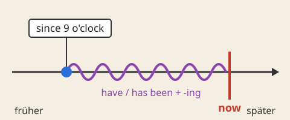

Was bis jetzt andauert: das present perfect progressive
Mit einem KI-Tutor lernen
Ein KI-Tutor erklärt dir diese Seite und hilft dir bei den Aufgaben. Wähl deinen Assistenten:
Mit Claude öffnen Mit ChatGPT öffnen Mit Mistral Vibe öffnen
Du nutzt dein eigenes Konto beim Anbieter. Der Assistent ist kein Angebot von lernapps.net: lernapps liefert nur Inhalte und Aufgaben. Die Wahl gilt für alle Seiten, nur auf diesem Gerät.
Bis jetzt
Aufgabe
Lösung
Die Welle beginnt in der Vergangenheit und läuft bis now. richtige Antwort
So zeigt der Zeitstrahl eine Tätigkeit, die irgendwann begann und bis jetzt andauert.
Die Welle liegt nur rechts von now.
Rechts von now liegt die Zukunft. Eine Tätigkeit, die schon begonnen hat, beginnt links.
Die Welle ist ein einzelner Punkt.
Ein Punkt ist ein einzelnes Ereignis. Eine Welle zeigt etwas, das über längere Zeit läuft.
Die Welle von einem Startpunkt bis now zeigt, dass die Tätigkeit bis jetzt andauert.
Das kannst du danach: Du erkennst im Chat, was bis jetzt andauert. Und du bildest das present perfect progressive mit have been oder has been und der -ing-Form.
Der Chat vor dem Kino
| Englisch | Deutsch |
|---|---|
| cinema | Kino |
| break down, broke down | kaputtgehen, eine Panne haben |
| catch | erwischen, bekommen |
| for ages | ewig lange |
| battery | Akku, Batterie |
| bored | gelangweilt |
| promise | versprechen |
| wrong | falsch |
| popcorn | Popcorn |
[1] Sophie: Ellie, where are you? I have been standing outside the cinema for an hour!
[2] Ellie: Sorry, sorry, sorry! My bus broke down.
[3] Sophie: What did you do then?
[4] Ellie: I have been trying to catch another bus since half past five, but the buses are full. Everybody has been waiting in the rain for ages.
[5] Sophie: I have been calling you all afternoon. Your phone was off.
[6] Ellie: The battery died. I have been using my phone too much today.
[7] Sophie: It's OK. I have been reading my book, so I am not bored. How long will you be?
[8] Ellie: Ten minutes, I promise! Amir has been looking for you, too. He thinks you have been waiting at the wrong cinema.
[9] Sophie: Fine. I am going to buy the tickets now. What would you like to eat?
[10] Ellie: A big box of popcorn, please! I am running as fast as I can!
Aus dem Bogen wird eine Welle
Der Bogen des present perfect zeigt, dass etwas bis jetzt gilt. Wenn die Tätigkeit selbst bis jetzt andauert, wird aus dem Bogen eine Welle. Sie beginnt am Startpunkt und läuft bis now. Dann sagst du, was jemand schon eine Weile tut.

© CC-BY-4.0Die Welle beginnt am Startpunkt und läuft bis now. Das Fähnchen since sagt, wann sie begann.
| Person | Form | Beispiel |
|---|---|---|
| I / you / we / they | have been learning | We have been learning Spanish for a year. |
| he / she / it | has been learning | She has been learning French since May. |
Merke
have / has + been + Verb mit -ing. Bei he, she und it steht has, sonst have. Mit since nennst du den Startpunkt, mit for die Länge. Die Frage heißt How long have you been …?
Das present perfect progressive betont die Tätigkeit und wie lange sie dauert: I have been cleaning the car (ich bin damit noch beschäftigt). Das present perfect betont das Ergebnis: I have cleaned the car (es ist sauber).
Übung
Aufgabe
Lösung
Seit einer Stunde richtige Antwort
Sophie schreibt for an hour. Die Länge ist eine Stunde.
Seit halb sechs
Seit halb sechs versucht Ellie, einen anderen Bus zu bekommen, nicht Sophie.
Den ganzen Nachmittag
Den ganzen Nachmittag ruft Sophie an. Das ist nicht das Warten.
Sophie wartet seit einer Stunde. Ellie versucht seit halb sechs, einen Bus zu bekommen, und Sophie ruft den ganzen Nachmittag an.
Aufgabe
Lösung
Zeile 1 richtige Antwort
In Zeile 1 steht for an hour.
Zeile 4 richtige Antwort
In Zeile 4 stehen since half past five und for ages.
Zeile 5
In Zeile 5 steht all afternoon. Das ist weder since noch for.
Zeile 6
In Zeile 6 steht too much today. Das ist keine Zeitangabe mit since oder for.
Since nennt den Startpunkt, for die Länge. All afternoon sagt auch, wie lange, aber ohne since oder for.
Aufgabe
Wähle die richtige Form.
Tipp
Das Verb braucht been und die -ing-Form. Bei he, she und it steht has.
- Peter spielt seit drei Stunden Fußball. → Peter … football for three hours.
- Wir lernen seit acht Uhr. → We … since eight o'clock.
- Es regnet seit heute Morgen. → It … since this morning.
- Die Kinder singen seit einer Stunde. → The children … for an hour.
Lösung
- Peter has been playing football for three hours.
- We have been studying since eight o'clock.
- It has been raining since this morning.
- The children have been singing for an hour.
Aufgabe
Schreibe den ganzen Satz im present perfect progressive.
Tipp
Frag dich, wie lange die Tätigkeit schon dauert. Dann has oder have, been und -ing.
- she · cook · since noon
- Amir · swim · for an hour
- we · wait · for the bus · for ten minutes
- Mr Hill · work · since six o'clock
Lösung
- She has been cooking since noon.
- Amir has been swimming for an hour.
- We have been waiting for the bus for ten minutes.
- Mr Hill has been working since six o'clock.
Aufgabe
Lösung
I have been writing emails all morning. richtige Antwort
Have been writing betont die Tätigkeit. Die Welle läuft bis now.
I have written five emails.
Hier zählt das Ergebnis, fünf fertige E-Mails. Das ist der Bogen des present perfect.
I wrote emails yesterday.
Yesterday nennt einen Punkt in der Vergangenheit. Das ist das simple past.
Das present perfect progressive zeigt die Tätigkeit, die läuft. Das present perfect zeigt das Ergebnis.
Aufgabe
In jedem Satz steckt ein Fehler. Schreibe den Satz richtig im present perfect progressive.
Tipp
Prüfe have oder has, dann been, dann die -ing-Form.
- I have waiting for two hours.
- My sister is playing the piano since June.
Lösung
- I have been waiting for two hours.
- My sister has been playing the piano since June.
Aufgabe
Hör zu und schreibe, was du hörst.
- KI
- KI
- KI
Lösung
- My cat has been hiding under the bed since breakfast.
- My parents have been painting the kitchen for two days.
- Why have you been crying?
Selbst sprechen und schreiben
Aufgabe
Hör zu, sprich nach und nimm dich auf. Vergleiche dann mit dem Original.
Tipp
Hör den Satz zuerst. Sprich langsam nach und achte auf have been und has been.
- How long have you been learning French?KI
- She has been practising the guitar all week.KI
- The students have been singing since lunch.KI
Zum Aufnehmen braucht diese Aufgabe JavaScript. Die Beispiele kannst du auch ohne anhören.
Lösung
- How long have you been learning French?
- She has been practising the guitar all week.
- The students have been singing since lunch.
Offene Aufgabe
Du schreibst einer Freundin oder einem Freund eine Nachricht. Etwas hat länger gedauert, als du dachtest. Schreibe drei Sätze: Was hast du schon lange getan, und wie lange?
Eine gute Antwort enthält:
Lösung
Sorry, I am late! I have been looking for my keys for twenty minutes. I have been calling my brother since noon, and he has been sleeping all day.
Wie es weitergeht
Am Wandbild hängt jetzt eine Welle, die von einem Startpunkt bis now läuft. Auf der nächsten Seite siehst du, bei welchen Verben die Welle nicht möglich ist.
Fehler gefunden oder eine Idee für diese App?